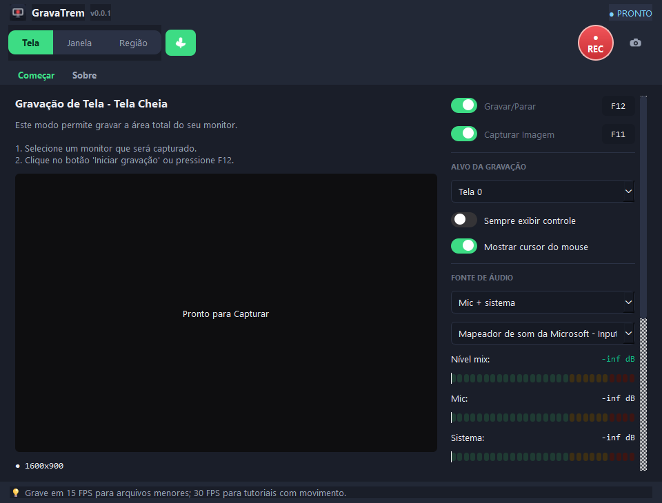
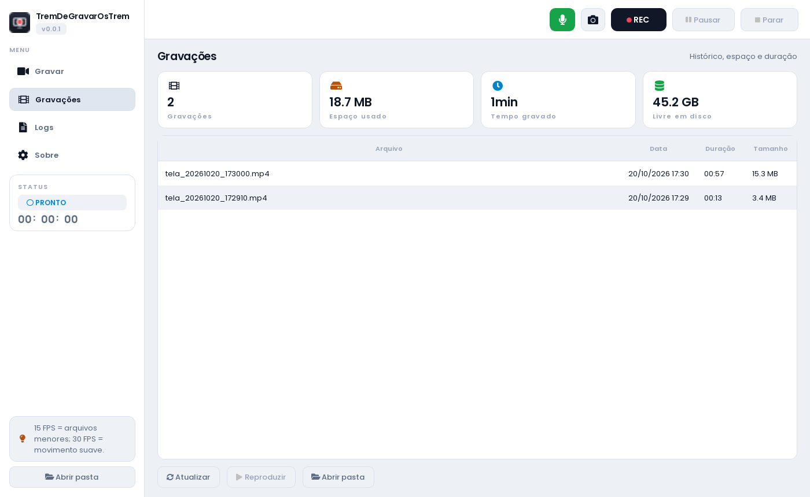

Aulas, reuniões, jogos, tutoriais: escolha o que gravar, aperte o REC e receba o vídeo pronto para assistir e mandar.
Instalação de 1 minutinho, sem conta e sem pagar nada.

Sem curso, sem configuração complicada.
A tela inteira, só uma janela ou um pedacinho. Você acompanha tudo numa prévia ao vivo.
Narre por cima do vídeo com o microfone, capture o som do jogo ou reunião — com medidor de volume na tela.
Atendeu a porta no meio da gravação? Aperte pausar e continue depois: o vídeo sai inteirinho.
Tudo salvo numa pasta sua, com lista, tamanho e duração. E foto da tela com um clique.
Botão vermelho de REC, F12 grava e para, F11 tira foto, e uma barrinha mostra o tempo.
Abre rápido, roda liso e entrega MP4 — o formato que roda em tudo: celular, TV e computador.
Claro, grande e com botão fácil de achar.

Um minutinho, sem conta e sem pagar. Na primeira vez ele pergunta onde guardar seus vídeos.
Marque a tela e o microfone, confira as barrinhas de volume e aperte o botão vermelho (ou F12).
Pare quando quiser: o vídeo cai na sua pasta, pronto para assistir, mandar no zap ou postar.
Na pasta Documentos, dentro de TremDeGravarOsTrem. Dentro do programa tem botão de abrir a pasta direto.
Não. É só escolher a tela e o microfone e apertar o REC. O resto já vem ajustado.
Ele foi feito para ser leve. Se o PC for mais fraquinho, feche programas pesados antes de gravar.
Sim: ele grava o microfone e o som do computador, juntos ou separados.
É. Sem cadastro, sem período de teste, sem marca d'água no vídeo.
O programa ainda não tem aquele selo digital pago, então o antivírus pode desconfiar. É só liberar o arquivo uma vez.
Baixe agora, de graça, e faça seu primeiro vídeo em 5 minutos.
TremDeGravarOsTrem 0.0.1